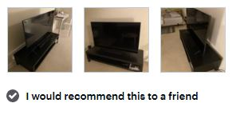

I am very happy, with the purchase. I could not believe how clear the tv was. Everything is as your
finger tips with the remote. The Samsung - 55" 7 Series - 4K UHD TV - Smart - LED - with HDR is a Best
Buy for me. Very happy!
Great picture! Was a combo birthday gift for my wife and I, and no regrets. Looks great streams great on
its own. Purchased an adaptor/switch to allow for more HDMI ports. We have an older Samsung TV that
doesn’t stream as well, and a Toshiba Fire TV that doesn’t look as great. Picture includes mount and
lights from Amazon. Yes the election looked great on the TV.
This is a pretty solid TV overall. After messing around with the settings, the picture quality is great.
Occasionally, the apps will kick me out to the home screen. Not really sure if those are app issues or
issues with the TV. Overall a solid TV with few downsides.
Samsung has Best TV’s in the world and I love their TV’s.
Will recommend Samsung TV for everyone.
Best Buy TV I bought is a Samsung 65 in. I love it! Great picture, great sound great everything. My old
one broke. Even though
I'm running low on cash I had to get one.
So happy with my purchase.
I love my 55” Samsung Smart TV. I love all of its features including the apps like #appletv, #hulu &
#netflix, quality of the 4K and the crystal clear screen. The price was also great for the size.

Being an Apple/iPhone family, I thought Samsung is more Android oriented and would go for LG tv since it
has more Apple compatible features. Check out my detailed review below:
Due to covid-19 restrictions, I couldn't compare the models the way I wanted in-store but I was able to
get both Samsung 7 series and LG 7 series (LG - 55" Class - UN7300 Series - 4K UHD TV - Smart - LED -
with HDR, Model: 55UN7300PUF, SKU: 6401783). Samsung is far better than LG in picture clarity. The LG tv
couldn't pick up the right colors and skin tones. There was too much of contrast and weird brightness on
the skin. On the other hand, Samsung picture clarity was amazing and everything looked very natural and
crisp clear. The stand which comes with the TV is easy to install compared to the LG.
Amazing Picture quality… Very pleased with my purchase!
Very nice TV for my master bedroom... Color is sharp and tone is good...